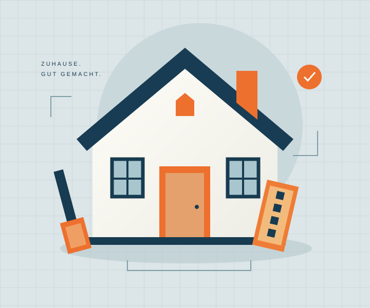

Сборка мебели
Шкафы, кровати и комоды.
от 50 €Мастер на час · Гамбург и Нижняя Саксония
Собрать, повесить, починить. Поможем с небольшими задачами, которые делают ваш дом уютнее. Быстро, надёжно и по честной цене.

Hamburg & NiedersachsenНаши услуги
От новой полки до установки кухни — поможем с делами по дому.
Шкафы, кровати и комоды.
от 50 €Сборка и установка вашей кухни.
По запросуМонтаж люстр и светильников.
от 35 € / шт.Надёжное крепление к стене.
от 30 €Установка карнизов, штор и жалюзи.
от 35 €Надёжное настенное крепление.
от 60 €Стиральные и посудомоечные машины.
от 50 €Замена смесителей в ванной и кухне.
от 55 €Обновление силиконовых швов в ванной.
от 60 €Регулировка дверей, замена ручек и замков.
от 40 €Небольшие ремонтные работы по дому.
50 € / часОриентировочные цены, точная стоимость — после согласования.
Понятная стоимость
Минимальный заказ — 1 час. Объём и стоимость работ обсудим заранее.
Ориентировочные цены, точная стоимость — после согласования.
Как это работает
Позвоните или коротко опишите задачу.
Обсудим работу, стоимость и удобное время.
Мастер приедет со своим инструментом.
Вы оплачиваете выполненную работу.
Почему Hausmeister Plus?
Согласуем с вами удобное время приезда.
Всё необходимое для работы привезём с собой.
Согласуем стоимость до начала работы.
Общаемся по-немецки и по-русски.
Давайте поможем
Коротко опишите задачу. Фото поможет нам точнее оценить объём работы.